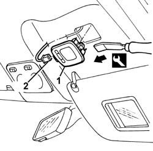
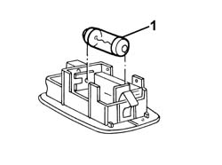

7040E20 courtesy light for passenger side sun blind mirror - r r
- Path
- Procedures > 70 FITTINGS > 7040 BODYSHELL INTERIOR TRIMS AND FITTINGS > 7040E interior courtesy light system > 7040E20 courtesy light for passenger side sun blind mirror - r r
- Kind
- repair procedure (removal / refitting; the operation number is the code)
- Applies to
- all engines; all production periods
- Interactive page
- https://sloeber94.github.io/elrnDB-a156/en/#/3238826
Applies to: all engines; all production periods
 Removing
Removing
 Refitting
Refitting1. Remove the courtesey light using the appropriate tool.
 | Name | Country |
|---|---|---|
1 | Scraper blade | 1.823.014.000 |
2. Disconnect the electrical connection.
 | Name | Connector |
|---|---|---|
2 | Passenger sun blind light |

Applies to: all engines; all production periods
1. If necessary, remove the bulb from the retaining clip.

Applies to: all engines; all production periods
Refitting
RemovingCheck that the courtesy light is undamaged.
If the bulb was removed, refit in its socket.
Connect the electrical connection.
Fit the courtesy light.
Check that the bulb is working.